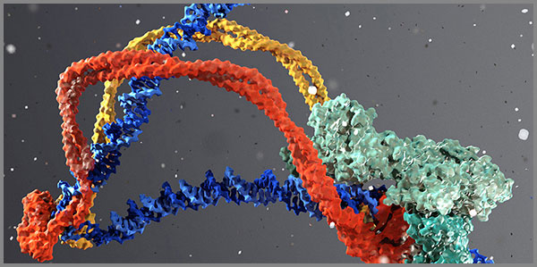

35. Գ Դ Ե Ա Խ Զ Վ Ն-ն որպես Կենսաբանության Լեզվամտածող Կամուրջ
 |
Գերմանացի մաթեմատիկոս Էմմի Նյոթերը 1918 թվականին ապացուցեց մի թեորեմ, որը դարձավ ժամանակակից ֆիզիկայի հիմնասյուներից մեկը։
Նյոթերի թեորեմը պնդում է, որ համակարգի յուրաքանչյուր շարունակական համաչափությանը համապատասխանում է պահպանման մի օրենք։
Այսինքն՝ եթե համակարգի վարքը չի փոխվում ժամանակի ընթացքում, ապա պահպանվում է էներգիան, եթե համակարգի վարքը չի փոխվում տարածության մեջ տեղափոխվելիս, ապա պահպանվում է իմպուլսը, եթե համակարգը համաչափ է պտույտների նկատմամբ, ապա պահպանվում է անկյունային մոմենտը, եթե պահպանվում է համակարգի տրամաչափային սիմետրիան, ապա խոսք է գնում լիցքի պահպանման օրենքի մասին և այլն:
Սա նշանակում է, որ պահպանման օրենքները պատահական չեն, այլ բխում են բնության խորքային համաչափություններից։ Եվ այստեղից է, որ բացվում է կամուրջը դեպի լեզուն: Եթե 60 – ական համակարգի բաղադրիչ հանդիսացող որևէ էլեմենտ, այդ թվում և լեզուն՝ որպես հնչյուբանական գործիք, ունի իր ներքին համաչափությունները, ապա պիտի ունենա նաև իր պահպանման օրենքները։
Այն, ինչ ձևավորվել է որպես իմաստ, չի կարող անհետանալ առանց հետքի, այլ պիտի փոխակերպվի և պահպանվի այլ համակարգերում՝ ներառյալ կենսաբանական կոդերում։
Սա այն գիտական հիմքն է, որի վրա կարող է կանգնել «Գ Դ Ե Ա Խ Զ Վ Ն»-ի ողջ տրամաբանությունը:
Գենետիկական կոդը կարդացվում է չորս տառերով՝ A, T, G, C։ Այս չորս տառերից կազմված 61 ակտիվ կոդոնները կոդավորում և սինթեզում են 20 ամինաթթուներ, որոնցից կառուցվում է կյանքի ողջ սպիտակուցային ճարտարապետությունը։ Սա հաստատված գիտական փաստ է։
Հայերենի այբուբենի 39 տառերի տառիմաստները, որոնցից յուրաքանչյուրը կրում է իր իմաստային կշիռը և վերծանված է Լեզվամտածող Աշխարհը տեսլականում, բաղադրվեում են 60-ական համակարգի 39 + 12 + 7 + 1 + 1 = 60 բանաձևում։
Մինչ այժմ այս երկու համակարգերը քննվել են առանձին։ Սակայն սույն աշխատությունը առաջին անգամ դրանք դնում է մեկ ընդհանուր հարթության վրա՝ ցույց տալով, որ լեզվական հնչյունաշղթան կարող է փոխակերպվել գենետիկական ստորագրության՝ պահպանելով իմաստային խտությունը։
Նույնիսկ կամայական հնչյուններից կազմված հաջորդականությունները, անցնելով ԴՆԹ անալիզի միջով, տալիս են իրենց գենետիկ ստորագրությունը, տրոհվելով կոդոնների և ազատ նուկլեոտիդների։ Այդ կոդոնները կոդավորում են ամինաթթուները, որոնց կենսաբանական դերերը կառուցվածքային կամուրջների ստեղծումն ու կառուցվածքային ճկունության ապահովումն են։
Աշխատությունը քննում է, թե արդյոք այս փոխակերպումը զուտ ձևական է, թե այն կրում է կենսաբանական նշանակություն։ Դրա համար կվերլուծեմ կոդոնային քարտեզը, ամինաթթուների բաշխումը, TRDD1 գենի պաշտպանողական դերը և էպիգենետիկ ազդակի հնարավոր ուղիները։
Սա գիտափիլիսոփայական հետազոտություն է, որը չի բավարարվում ենթադրությամբ, այլ փորձում է կառուցել ապացուցողական շղթա՝ հնչյունից դեպի տառիմաստ, տառիմաստից դեպի գենետիկական կոդ, և գենետիկական կոդից դեպի կենդանի համակարգի պաշտպանական առանցքը։
Իսկ եթե այս շղթան կանգուն է, ապա մենք կանգնում ենք մի նոր հարցի առաջ, որի պատասխանը կարող է փոխել այն, թե ինչպես ենք մենք հասկանում լեզվի և կյանքի հարաբերությունը։
Լեզուն դադարելով լինել միայն մարդկային երևույթ կամ հաղորդակցության միջոց՝ դառնում է կենսաբանական փաստարկից բխող կյանքի ինքնակարգավորման գործիք:
Հնչյունաբանական վերլուծական մեթոդի հակառակ երեսը
Լեզվամտածող Աշխարհը տեսլականը մեր համար դարձավ մի գործիք, որի միջոցով ամեն մի տառ և ամեն մի հնչյուն ստացավ իր իմաստային կշիռը։ Այդ գործիքը մենք կիրառել ենք բազմիցս՝ վերլուծելով բառեր, անուններ, հնչյունաշղթաներ, և ստացել ենք ապացուցողական արդյունքներ։ Ճանապարհը միշտ եղել է նույնը՝ վերցրել ենք հնչյունը կամ տառը, բացել ենք նրա իմաստը, և այդ իմաստից շարժվել ենք դեպի ձայն, գույն, թիվ, իմաստ կամ գենետիկական ստորագրություն։
Սա ուղիղ ընթացք է՝ հնչյունից դեպի իմաստ, իմաստից դեպի համակարգ։ Բայց այս աշխատությունը ծնվել է մի հարցից, որը շուռ է տալիս այդ ընթացքը։
Իսկ ի՞նչ կլինի, եթե մենք սկսենք ոչ թե հնչյունից, այլ նպատակից։ Եթե վերցնենք մի կոնկրետ կենսաբանական համակարգ, օրինակ՝ գենը, հասկանանք նրա դերը, ապա հետհաշվարկով գտնենք այն հնչյունաբանական հաջորդականությունը, որը համապատասխանում է այդ դերին։
Սա հնչյունաբանական վերլուծական մեթոդի հակառակ երեսն է։ Այստեղ մենք այլևս չենք հարցնում՝ «ի՞նչ է նշանակում այս հնչյունը», այլ հարցնում ենք՝ «ո՞ր հնչյունը կամ հնչյունաշղթան է կրում այն իմաստը, որը համապատասխանում է այս կենսաբանական նպատակին»։
Այս մոտեցումը մեթոդը դարձնում է ոչ միայն վերլուծական, այլև կառուցողական։ Այն թույլ է տալիս լեզվից անցնել նպատակային ազդակին, իսկ ազդակից՝ դեպի կենսաբանական համակարգի հետ հնարավոր փոխազդեցությանը։
Այս գործում այդ հակառակ երեսը կիրառվելու է մեկ կոնկրետ օրինակի վրա՝ TRDD1 գենի, որը հայտնի է որպես գենոմի պահապան էլեմենտ։ Մենք վերցնելու ենք այդ գենի պաշտպանողական դերը, վերլուծելու ենք այն իմաստային որակները, որոնք համապատասխանում են պաշտպանությանը, կարգին, վերականգնմանը, ապա հետհաշվարկով գտնելու ենք այն հնչյունաշղթան, որը կրում է այդ որակները և որը մատնեմատիկորեն կամ էպիգենետիկ ճանապարհով որպես ազդակ կակտիվացնի այդ գենը, առանց խմբագրման։
Սակայն սա միայն TRDD1-ի մասին չէ։ Սա մեթոդ է, որը կարող է կիրառվել ցանկացած գենի համար։ Եվ եթե այս աշխատության ավարտին մեթոդը կանգուն մնա, ապա մենք կունենանք մի գործիք, որը կարող է հաշվարկել հնչյունաբանական էպիգենետիկ ազդակ յուրաքանչյուր կենսաբանական նպատակի համար։
Ահա թե ինչու է այս գլուխը կոչվում «հակառակ երես»։ Որովհետև այստեղ լեզուն դադարում է լինել միայն վերլուծության առարկա և դառնում է կառուցման գործիք։ Այստեղ մենք սկսում ենք գրել կենսաբանական նպատակներով՝ օգտագործելով այն նույն այբուբենը, որով մինչ այժմ միայն կարդում էինք։
Եվ հենց այստեղից է սկսվում այն ճանապարհը, որի միջոցով մենք առաջին անգամ կկարողանանք խոսել գեների հետ՝ նրանց համար հաշվարկված հնչյուններով։
Լեզվամտածողությունը երկկողմ կամուրջ է լեզվի և գենի միջև:
Իմաստը որպես հնչյունի աղբյուր լեզվի ձևավորման պրոցեսում
Լեզուն չի ծնվել որպես պատահական հնչյունների հավաքածու։ Լեզուն ծնվել է այն պահից, երբ մարդու ներսում ձևավորված իմաստը կարիք ունեցավ մարմին ստանալու, դուրս գալու լռությունից և դառնալու հաղորդակցվող իրականություն։
Այսինքն՝ առաջինը եղել է իմաստը, բանը, իսկ հնչյունը դարձել է նրա առաջին շունչը։ Լեզվամտածող Աշխարհը տեսլականը հենց այս տրամաբանության վրա է կառուցված։ Այն ցույց է տալիս, որ յուրաքանչյուր տառիմաստ ի սկզբանե կրել է որոշակի իմաստային լիցք, և այդ լիցքն է ձևավորել հնչյունը, այլ ոչ թե հակառակը։
Երբ մենք առաջին գլխում խոսեցինք հնչյունաբանական վերլուծական մեթոդի հակառակ երեսի մասին, մենք փաստացի վերադարձանք այս սկզբնական վիճակին՝ այնտեղ, ուր իմաստը նախորդում է հնչյունին, իսկ հնչյունը դառնում է իմաստի վերարտադրման գործիք։
Սա նշանակում է, որ հետհաշվարկը, որը կկատարենք որևէ կենսաբանական նպատակի հնչյունային ազդակ ստանալու համար, պատահական մանիպուլյացիա չէ, այլ վերադարձ դեպի լեզվի ծննդյան պահը, երբ իմաստը դեռ նոր էր փնտրում իր հնչյունային մարմինը։
Մենք այստեղ կրկնելու ենք այդ նույն պրոցեսը, բայց արդեն գիտակցված մակարդակով։ Եթե ժամանակին իմաստն ինքնաբերաբար գտել է իր հնչյունը, ապա հիմա մենք կարող ենք իմաստից ելնելով կանխամտածված կերպով կառուցել հնչյունաշղթա, որը կկրի այդ իմաստը և կդառնա ազդակ։
Եվ հենց այստեղ է թաքնված ամբողջ առանցքը՝ այն, որ լեզուն միայն հաղորդակցության գործիք չէ, այլ իմաստի կենդանի մարմին, որը կարող է վերածվել կենսաբանական ազդակի՝ առանց կորցնելու իր իմաստային խտությունը։
Այս աշխատությունում մենք կցուցադրենք այդ սկզբունքը՝ իմաստից դեպի հնչյուն, և հնչյունից դեպի գենետիկական ստորագրություն՝ որպես մի շարունակական, ապացուցողական ճանապարհ։
Իմաստը հնչյունից առաջ է եղել, և այս ամենը պարզապես վերադարձ է դեպի այն պահը, երբ լեզուն կենսաբանական հետհաշվարկով առաջին անգամ շունչ առավ։
Գենետիկական ստորագրության անատոմիան
Կյանքի այբուբենը գրված է չորս նշանով՝ A, T, G, C։ Այս չորսը քիմիական տարրերը նուկլեոտիդներն են, որոնց հաջորդականությամբ բնությունը արարել է իր ամենաբարդ և խորքային տեքստերից մեկը՝ գենետիկական կոդը։ Բայց այս չորս տարրերը միայն նյութ չեն։ Դրանցից յուրաքանչյուրն իր մեջ կրում է մի իմաստային լիցք, որը կարելի է բացել և մենք բացել էինք դա նախորդ գործում՝ Լեզվամտածող Աշխարհը տեսլականի սահմանած տառիմաստների միջոցով։
Եթե մենք վերցնենք հայերենի 39 տառիմաստները և փորձենք դրանք դասավորել ըստ այն բանի, թե որ նուկլեոտիդի իմաստային դաշտին են դրանք համապատասխանում կամ հարում, ապա կստանանք չորս մեծ խմբեր, որոնցից յուրաքանչյուրը կրում է իր առանձնահատուկ որակը։
Այս խմբավորումը պատահական չէ։ Այն բխում է սկզբունքից, որ լեզվի իմաստային որակները և կյանքի կոդի տարրերը նույն կարգի դրսևորումներ են՝ տարբեր մարմիններով։
Ադենինի խումբ (A)
Իմաստային հոսքը՝ Արարման հոսք, սկիզբ, աստ → Դարպաս գոյության → Սահուն հոսք → Ներքին էություն → Իմաստ → Ներքին էություն
Տառ Նուկլեոտիդի իմաստային հոսքին համապատասխանող տառիմաստներ
Ա Արարման հոսք, սկիզբ, աստ
Բ Բան
Դ Դարպաս գոյության
Ե Սահուն հոսք
Զ Զորություն, պոտենցիալվ Ծ Ծնհուշ ծնեբեկման
Հ Հսկում արարման
Ձ Ձևի կաղապար
Ղ Խտացում
Չ Հաստատման կամ հերքման շեմ
Թիմինի խումբ (T)
Իմաստային հոսքը՝ Հոսքի թրթիռ → Իմաստ → Նյութի մարմնավորում → Իմաստ → Ներքին էություն
Տառ Նուկլեոտիդի իմաստային հոսքին համապատասխանող տառիմաստներ
Թ Հոսքի թրթիռ
Ի Իմաստ
Լ Լույս տեսանելի
Խ Խտացման զպրտիչ
Կ Կրկնություն ստեղծական
Մ Նյութի մարմնավորում
Յ Հոսքի հաղորդակ
Ն Ներքին էություն
Շ Շարժում զգուշավոր
Ո Զպրտիչ հավաքող
Գուանինի խումբ (G)
Իմաստային հոսքը՝ Գոյություն → Ուռկան զորության → Արարման հոսք, սկիզբ, աստ → Ներքին էություն → Իմաստ → Ներքին էություն Տառ Նուկլեոտիդի իմաստային հոսքին համապատասխանող տառիմաստներ
Գ Գոյություն
Է Էություն
Ը Ընթացք անվերջանալի
Ժ Ժամանակ
Պ Զորության պահոց
Ջ Կոհերենտ ալիք
Ռ Ռեզոնանսի ռիթմ
Ս Ցրող զպրտիչ
Վ Կլանող պահոց
Տ Զորության հարված
Ցիտոզինի խումբ (C)
Իմաստային հոսքը՝ Ցռել, սփռել → Իմաստ → Զորության հարված → Զպրտիչ հավաքող → Զորություն, պոտենցիալ → Իմաստ → Ներքին էություն
Տառ Նուկլեոտիդի իմաստային հոսքին համապատասխանող տառիմաստներ
Ճ Ճիչ ծնեբեկման
Ց Ցռել, սփռել
ՈՒ Ուռկան զորության
Փ Զորության պոռթկում
Ք Քանքար
և Կամրջում, կապ, անցում
Օ Օծություն
Ֆ Արգասիք ճոխության
Ր Եզր ամբողջացնող
Այս չորս խմբերը կազմում են այն ամբողջական համակարգը, որի միջոցով հայերենի ցանկացած տառ ստանում է իր նուկլեոտիդային համապատասխանությունը։
Եթե մենք վերցնենք որևէ հնչյունաշղթա և այն տառ առ տառ անցկացնենք այս համապատասխանության միջով կստանանք այդ հնչյունաշղթային համապատասխանող նուլեոտիդային կոդը, որին անվանելու ենք հնյունաշղթայի գենետիկական ստորագրություն։ Այդ ստորագրությունը պատահական տառերի շարք չէ, այլ իմաստային դաշտերի վերադասավորում՝ արդեն ԴՆԹ-ի լեզվով։
Ստացված ստորագրությունը տրոհվում է կոդոնների, կոդոնները՝ ամինաթթուների, իսկ ամինաթթուները կրում են կենսաբանական դերեր, որոնք կարող են դառնալ կենդանի համակարգի ազդակներ։ Այս ամբողջ տրամաբանությունը, որ այստեղ շարադրեցի որպես տեսություն, արդեն իսկ նյութականացված է https://ohanyan911-sudo.github.io/monumentalbridge/tools.html կայքէջում զետեղված գործիքի «ԴՆԹ անալիզ» կոճակի ֆունկցիոնալությամբ, որը կատարում է այս փոխակերպումը ռեալ հաշվարկով, առանց իմիտացիայի:
Բայց գենետիկական ստորագրությունը միայն սկիզբն է, որը բաղկացած է կոդոններից և ազատ նուկլեոտիդներից, որոնք պիտի բացահայտեն իրենց ամբողջական քարտեզը, որում կերևա որ 61 ակտիվ եռյակներից կազմված կոդոնները գծագրում են կյանքի կոդի իրական լանդշաֆտը:
Լեզվով վերծանված կենսաբանական իրականությունն այլևս մատնեմատիկորեն իրական է:
Կոդոնային քարտեզի ամբողջական համակարգը
Ժամանակակից կենսաբանությունը գենետիկական քարտեզը դիտարկում է որպես քիմիական զուգադիպությունների աղյուսակ, որտեղ չորս նուկլեոտիդները՝ A, T, G, C, հավաքվում են երեք տառանոց կոմբինացիաների մեջ։ Սակայն 60-ական պարադիգմի պրիզմայով նայելիս, կյանքի այս քարտեզը բացվում է որպես տիեզերական հնչյունաբանության կատարյալ լանդշաֆտ, որտեղ յուրաքանչյուր եռյակ ոչ թե պատահական ծածկագիր է, այլ իմաստային խտացման հատուկ հանգույց։
Երբ մենք անջատում ենք երեք ստոպ-կոդոնները, որոնք համակարգում աշխատում են որպես լռության, ավարտի և անդառնալիության շեմային դարպասներ, մնում է ճիշտ 61 ակտիվ կոդոն։ Այս 61 միավորը 60-ական համակարգի բացարձակ հայելին է, որտեղ մեկ ավելցուկային միավորը արդարացվում է Ֆա-յի էֆեկտով, որը այն կենդանի, դինամիկ շեղումն է, որ թույլ չի տալիս համակարգին սառչել իդեալական մաթեմատիկական մահվան մեջ և ապահովում է նրա էպիգենետիկ շնչառությունն ու հարմարվողականությունը։
Այս 61 կոդոնները կազմում են մի ամբողջական տեղեկատվական միջավայր, որը մենք կարողանում ենք վերծանել հայերենի 39 տառիմաստների միջոցով։ Ցանկացած հնչյունաշղթա, անցնելով այս մատրիցայի միջով, դադարում է լինել միայն լեզվական երևույթ։ Այն ստանում է ճշգրիտ երկրաչափական և կենսաբանական կշիռ, որը մեր ստեղծած գործիքի «ԴՆԹ անալիզ» կոճակը հաշվարկում է իրական ժամանակում՝ առանց իմիտացիայի։ Սա նշանակում է, որ կոդոնային քարտեզը տիեզերքի առաջին տեխնոլոգիական արարքի շարունակությունն է, որտեղ Բանը դառնում է մարմին, իսկ մարմինը՝ իմաստի պահպանման երաշխավոր։
Կոդոնների այս 61 ակտիվ միավորները բնության մեջ չեն գործում հավասարաչափ, գծային սփռումով։ Դրանք ենթարկվում են խիստ հիերարխիկ, ֆրակտալային բաշխվածության, որտեղ քսան ամինաթթուներից յուրաքանչյուրը ստանում է իրեն հատկացված կոդոնների հստակ քանակը՝ մեկ, երկու, երեք, չորս կամ վեց եռյակներ։ Այս քանակական տարբերակումը ոչ թե էվոլյուցիոն քաոսի արդյունք է, այլ տեղեկատվական խտության և կայունության կառավարման ինժեներական մեխանիզմ։
Այն ամինաթթուները, որոնք պատասխանատու են համակարգի գլխավոր կառուցվածքային կամուրջների ստեղծման և իմունային պաշտպանության համար, ինչպիսիք են Արգինինը կամ Լեյցինը, ունեն առավելագույն՝ 6-ական կոդոնային ծածկույթ։ Սա նշանակում է, որ համակարգը նրանց տվել է հնչյունաբանական ընդարձակ ազատություն և պաշտպանվածություն էնտրոպիայից, նույնիսկ եթե արտաքին միջավայրի աղմուկը կամ պատահական մուտացիան փոխի նուկլեոտիդային տառերից մեկը, իմաստային վեկտորը չի խեղաթյուրվի, և սպիտակուցի կաղապարը կպահպանի իր նախասկզբնական ծրագրավորված ֆունկցիան։
Մյուս կողմից, Մեթիոնինը՝ սպիտակուցների սինթեզի բացարձակ մեկնարկային կետը, ունի ընդամենը 1 կոդոն՝ ATG-ն։ Սա ցույց է տալիս, որ արարման սկզբնավորման դարպասը պետք է լինի խիստ սինգուլյար, զերծ ցանկացած երկիմաստությունից: Այնտեղ, ուր Բանը նոր է դուրս գալիս լռությունից, շեղումն անթույլատրելի է։ Այսպիսով, կոդոնային քարտեզն իր ողջ ծավալով վերածվում է մի դինամիկ հանգույցի, որտեղ տառիմաստների էներգետիկ հետագծերը կանխորոշում են նյութի ֆիզիկական հատկությունները։
Այսպիսով, կոդոնային քարտեզի 61 ակտիվ միավորները գծագրում են կյանքի կոդի իրական լանդշաֆտը։ Այս քարտեզում յուրաքանչյուր նուկլեոտիդային եռյակ հանդես է գալիս որպես մի առանձին հնչյունաբանական ալիք, որը նյութական տարածության մեջ կազմակերպում է ատոմների դասավորությունը։ 60-ական համակարգի պրիզմայով վերծանված այս լանդշաֆտը ցույց է տալիս, որ գենետիկական կոդը երբեք չի եղել սառը, անդեմ մեխանիզմ։ Այն գոյաբանական նախալեզվի շարունակականությունն է, որտեղ իմաստային խտացումները կառավարում են կենսաբանական կեցությունը։
61 ակտիվ կոդոնների աղյուսակը
| N | Կոդոն | Ամինաթթու | Հատկություն / Դերը |
| 1 | TTT | Ֆենիլալանին (Phenylalanine) | Անուշաբույր և հիդրոֆոբ, սպիտակուցների կառուցվածքային կայունությունն ապահովող նյութ |
| 2 | TTC | Ֆենիլալանին (Phenylalanine) | Նույնը |
| 3 | TTA | Լեյցին (Leucine) | Հիդրոֆոբ, սպիտակուցների ծալքավորման և թաղանթային փոխազդեցությունների համար կարևոր նյութ |
| 4 | TTG | Լեյցին (Leucine) | Նույնը |
| 5 | CTT | Լեյցին (Leucine) | Նույնը |
| 6 | CTC | Լեյցին (Leucine) | Նույնը |
| 7 | CTA | Լեյցին (Leucine) | Նույնը |
| 8 | CTG | Լեյցին (Leucine) | Նույնը |
| 9 | ATT | Իզոլեյցին (Isoleucine) | Հիդրոֆոբ, էներգիայի փոխանակության և սպիտակուցների կայունության համար անհրաժեշտ նյութ |
| 10 | ATC | Իզոլեյցին (Isoleucine) | Նույնը |
| 11 | ATA | Իզոլեյցին (Isoleucine) | Նույնը |
| 12 | ATG | Մեթիոնին (Methionine) | Սպիտակուցների սինթեզի մեկնարկային ամինաթթու |
| 13 | GTT | Վալին (Valine) | Հիդրոֆոբ, մկանային հյուսվածքի էներգիայի աղբյուր |
| 14 | GTC | Վալին (Valine) | Նույնը |
| 15 | GTA | Վալին (Valine) | Նույնը |
| 16 | GTG | Վալին (Valine) | Նույնը |
| 17 | TCT | Սերին (Serine) | Հիդրոֆիլ, ֆերմենտների ակտիվ կենտրոններում կարևոր դեր ունեցող նյութ |
| 18 | TCC | Սերին (Serine) | Նույնը |
| 19 | TCA | Սերին (Serine) | Նույնը |
| 20 | TCG | Սերին (Serine) | Նույնը |
| 21 | AGT | Սերին (Serine) | Նույնը |
| 22 | AGC | Սերին (Serine) | Նույնը |
| 23 | CCT | Պրոլին (Proline) | Կառուցվածքային, կոտրում է ալֆա պարույրները, կարևոր է կոլագենում |
| 24 | CCC | Պրոլին (Proline) | Նույնը |
| 25 | CCA | Պրոլին (Proline) | Նույնը |
| 26 | CCG | Պրոլին (Proline) | Նույնը |
| 27 | ACT | Թրեոնին (Threonine) | Հիդրոֆիլ, ֆոսֆորիլացման թիրախ, իմունային ֆունկցիան ապահովող նյութ |
| 28 | ACC | Թրեոնին (Threonine) | Նույնը |
| 29 | ACA | Թրեոնին (Threonine) | Նույնը |
| 30 | ACG | Թրեոնին (Threonine) | Նույնը |
| 31 | GCT | Ալանին (Alanine) | Փոքր, հիդրոֆոբ, էներգիայի փոխանակության մեջ կարևոր նյութ |
| 32 | GCC | Ալանին (Alanine) | Նույնը |
| 33 | GCA | Ալանին (Alanine) | Նույնը |
| 34 | GCG | Ալանին (Alanine) | Նույնը |
| 35 | TAT | Թիրոզին (Tyrosine) | Անուշաբույր, ֆոսֆորիլացման թիրախ, ազդանշանային ուղիների երաշխավոր |
| 36 | TAC | Թիրոզին (Tyrosine) | Նույնը |
| 37 | CAT | Հիստիդին (Histidine) | Մետաղների հետ կապվող նյութ ֆերմենտների կատալիտիկ կենտրոններում |
| 38 | CAC | Հիստիդին (Histidine) | Նույնը |
| 39 | CAA | Գլուտամին (Glutamine) | Ազոտ փոխադրող, իմունային բջիջների էներգիայի աղբյուր |
| 40 | CAG | Գլուտամին (Glutamine) | Նույնը |
| 41 | AAT | Ասպարագին (Asparagine) | Ազոտ փոխադրող, սպիտակուցները կայունացնող նյութ |
| 42 | AAC | Ասպարագին (Asparagine) | Նույնը |
| 43 | AAA | Լիզին (Lysine) | Դրական լիցքավորված նյութ, որը կապում է ԴՆԹ-ին, կարևոր է հիստոններում |
| 44 | AAG | Լիզին (Lysine) | Նույնը |
| 45 | GAT | Ասպարտաթթու (Aspartic acid) | Բացասական լիցքավորված նյութ ֆերմենտների ակտիվ կենտրոններում |
| 46 | GAC | Ասպարտաթթու (Aspartic acid) | Նույնը |
| 47 | GAA | Գլուտամինաթթու (Glutamic acid) | Բացասական լիցքավորված նեյրոհաղորդիչ |
| 48 | GAG | Գլուտամինաթթու (Glutamic acid) | Նույնը |
| 49 | TGT | Ցիստեին (Cysteine) | Ծծումբ պարունակող նյութ, որը դիսուլֆիդային կամուրջներ է ստեղծում |
| 50 | TGC | Ցիստեին (Cysteine) | Նույնը |
| 51 | TGG | Տրիպտոֆան (Tryptophan) | Անուշաբույր, սերոտոնինի նախորդող նյութ, որը կարևոր է տրամադրության համար |
| 52 | CGT | Արգինին (Arginine) | Դրական լիցքավորված նյութ, որը մասնակցում է ազոտի օքսիդի սինթեզին և ունի իմունային ֆունկցիա |
| 53 | CGC | Արգինին (Arginine) | Նույնը |
| 54 | CGA | Արգինին (Arginine) | Նույնը |
| 55 | CGG | Արգինին (Arginine) | Նույնը |
| 56 | AGA | Արգինին (Arginine) | Նույնը |
| 57 | AGG | Արգինին (Arginine) | Նույնը |
| 58 | GGT | Գլիցին (Glycine) | Ամենափոքր և ճկուն, կոլագենի հիմնական բաղադրիչը |
| 59 | GGC | Գլիցին (Glycine) | Նույնը |
| 60 | GGA | Գլիցին (Glycine) | Նույնը |
| 61 | GGG | Գլիցին (Glycine) | Նույնը |
Աղյուսակը վերջացավ Գլիցինով։ Բայց աղյուսակը դեռ գեն չէ։ Դա ընդամենը այբուբեն է՝ 61 տառ, որոնցով գրվում են բոլոր գեները։ Գենը սկիզբ է առնում այն դեպքում, երբ կոդոնները շարվում են իրար հետևից՝ մեկը մյուսի կողքին և այդ շարքից ծնվում է մի բան, որը ոչ մի առանձին կոդոն չի կարող ասել։ Ամեն գեն ունի սկիզբ, մարմին և վերջ։ Երեքը միասին։ Առանց իրար շղթան գեն չի ձևավորում: Գենի սկիզբը միշտ ATG կոդոնն է՝ միակը, որ ասում է՝ «այստեղից սկսի՛ր»։ Ուրիշ ոչ մի կոդոն չի կարող այդ դերը ստանձնել։ Սկիզբը մեկն է, որովհետև երկու սկիզբ նշանակում է քաոս։ Գենի մարմինը կոդոնների շարան է, որը կառուցում է ամինաթթուների շղթան։ Այստեղ է, որ գրվում է սպիտակուցի ամբողջ պատմությունը։ Գենի վերջը TAA, TAG կամ TGA ստոպ կոդոններց որևէ մեկն է, որոնք կանգնեցնում են շղթայի կառուցումը։ Առանց այս երեքի, շարանը կշարունակվեր անվերջ ու կկորցներ իմաստը։ Վ երցնենք մի պարզ օրինակ՝ ATG — TGT — GGA — TAA: Չորս կոդոն։ Ընդամենը տասներկու տառ։ Բայց սա արդեն գեն է։ ATG – սա սկիզբն է՝ Մեթիոնին TGT - Ցիստեին GGA - Գլիցին TAA - կանգ Երբ բջիջը կարդում է այս շարանը, նա սկսում է ATG-ից, ավելացնում Ցիստեին, հետո Գլիցին, հետո կանգ է առնում TAA-ի ազդակով։ Ստացվում է երկու ամինաթթուներից կազմված կարճ պեպտիդ։
Այսքանը։ Գենը ոչ ավել, ոչ պակաս՝ շարան է, որն ունի սկիզբ, մարմին և վերջ։ Կոդոնային քարտեզը այբուբենն է։ Գենը՝ տեքստը։ Նույն 61 կոդոններով կարելի է գրել ցանկացած գեն։ Ինչպես նույն 39 տառերով կարելի է գրել ցանկացած բառ։ Տարբերությունը միայն հերթականության մեջ է, որը փոխում է ամեն ինչ։ TGT-GGA → Ցիստեին-Գլիցին: GGA-TGT → Գլիցին-Ցիստեին:
Նույն տառերն են, տարբեր շարքեր, տարբեր սպիտակուցներ։ Սա նույնն է, ինչ «սեր» և «րես» բառերը, որոնք կազմված են նույն տառերից, բայց ունեն տարբեր իմաստներ։
Բոլոր գեներն էլ շարվում են կոդոններից, բայց դրանք տարբեր աշխատանք են կատարում և ըստ դերերի դրանք բաժանվում են հինգ խմբի:
Կառուցվածքային գեներ - կոլագեն, կերատին, ակտին։ Սրանք մարմնի շինանյութն են։ Առանց դրանց, մարմինը ձև չէր ունենա։
Ֆերմենտային գեներ - մարսողական ֆերմենտներ, ԴՆԹ-պոլիմերազ։ Սրանք արագացնում են քիմիական ռեակցիաները։ Առանց դրանց, մարմինը կաշխատեր հազար անգամ դանդաղ։
Կարգավորող գեներ - TRDD1, RB1, MYC։ Սրանք հրամանատարներն են։ Նրանք ասում են մյուս գեներին՝ երբ աշխատել, երբ կանգնել։
Փոխադրող գեներ - հեմոգլոբին, իոնային ուղիներ։ Սրանք բեռնակիրներն են։ Տանում են թթվածին, իոններ, նյութեր։
Պաշտպանողական գեներ - BRCA1, BRCA2, իմունային գեներ։ Սրանք պահապաններն են։ Պաշտպանում են ԴՆԹ-ն, վերականգնում վնասվածքը։
Եվ ահա կոդոններից սինթեզվող ամինաթթուների կազմը որոշում է, թե սպիտակուցը ինչ կանի։ Օրինակ՝ Ցիստեինը (TGT, TGC) ունի ծծումբ, որը կամուրջներ է ստեղծում։ Դա ամրություն է տալիս։ Գլիցինը (GGT, GGC, GGA, GGG) ամենափոքրն է։ Դա ճկունություն է տալիս։ Արգինինը (6 կոդոն) լիցքավորված է դրական։ Դա կապում է ԴՆԹ-ին։ Այսինքն՝ ամինաթթուների հատկությունները որոշում են սպիտակուցի բնավորությունը։
Կոդոնային քարտեզը որը կազմված է 61 ակտիվ կոդոններից և 20 ամինաթթուներից՝ այբուբենն է։ Գենը, որն իրենից ներկայացնում է կոդոնների շարան՝ սկիզբով (ATG), մարմնով և վերջով (TAA/TAG/TGA)՝ տեքստն է, իսկ դասակարգումը՝ կառուցվածքային, ֆերմենտային, կարգավորող, փոխադրող, պաշտպանողական՝ ցույց է տալիս կոդոնների դերը, որոնց հաջորդականության փոփոխումը որակապես փոխում է ամեն ինչ:
Կոդոնը ունի իր տեղը, բայց այն չգիտի իր նպատակը, որը ծնվում է գենից:
Գենետիկական առանցքներ և TRDD1 ամենակարճ գենը
Մարդու գենոմը կարդացվում է չորս տառով՝ A, T, G, C։ Այս չորս նուկլեոտիդների հաջորդականությամբ գրված է այն ամենը, ինչ մեզ դարձնում է կենդանի՝ աչքերի գույնից մինչև իմունային համակարգի պատասխանը, մկանների կառուցվածքից մինչև ուղեղի աշխատանքը։ Բայց կան գեներ, որոնք չափազանց երկար են՝ հազարավոր նուկլեոտիդներով, և կան գեներ, որոնք այնքան կարճ են, որ կարող ես մեկ շնչով կարդալ։ Այդպիսին է TRDD1-ը։
TRDD1-ը մարդու գենոմի ամենակարճ գենն է։ Ըստ հանրային գենոմային տվյալների այն բաղկացած է ընդամենը ութ նուկլեոտիդից՝ GAAATAGT։ Ութ տառ։ Դա ավելի կարճ է, քան շատ բառեր, որ մենք ամեն օր արտասանում ենք։ Բայց այս ութ տառի մեջ թաքնված է մի ամբողջ կենսաբանական պատմություն։
Ամեն գեն, անկախ երկարությունից, ունի երեք պարտադիր մաս՝ սկիզբ, մարմին և վերջ։ Սա գենի առանցքն է: Սկիզբը միշտ ATG կոդոնն է։ Սա միակ կոդոնն է, որը բջիջին ասում է՝ «այստեղից սկսի՛ր սպիտակուց կառուցել»։ Ուրիշ ոչ մի եռյակ չի կարող այդ դերը ստանձնել։ Եվ սա պատահական չէ։ Եթե գենի մեջ լինեին երկու հնարավոր սկիզբ, բջիջը չէր իմանա, թե որից սկսի, և սպիտակուցը կկառուցվեր սխալ տեղից։ Սկիզբը մեկն է, որովհետև երկու սկիզբ նշանակում է քաոս։
Վերջը երեք տարբերակ ունի՝ TAA, TAG կամ TGA։ Սրանք ստոպ-կոդոններ են։ Երբ ռիբոսոմը հասնում է այս եռյակներից մեկին, այն դադարեցնում է սպիտակուցի կառուցումը և բաց է թողնում պատրաստի շղթան։ Երեք տարբերակ, բայց մեկ արդյունք՝ կանգ։ Իսկ գենի մարմինը՝ սկզբի և վերջի միջև ընկած հատվածը, կոդոնների շարան է, որտեղ ամեն եռյակ կոդավորում է մեկ ամինաթթու։ Այստեղ է, որ գրվում է սպիտակուցի ողջ պատմությունը՝ նրա ձևը, լիցքը, ճկունությունը, կապերը։
Կենսաբանության մեջ այս կառուցվածքը կոչվում է բաց ընթերցման շրջանակ (open reading frame): Եվ այս շրջանակն է, որ որոշում է՝ ինչպիսին կլինի սպիտակուցը, որքան կապրի, ուր կգնա բջջի ներսում։
TRDD1-ը կոդավորում է երկու ամինաթթու՝ GAA – Գլուտամաթթու, ATA – Իզոլեյցին և պարունակում է նաև երկու ազատ GT նուկլեոտիդներ, որոնք կարգավորող դեր ունեն։ Ինչպես տեսնում ենք, TRDD1-ը բաղկացած է ուղիղ ութ նուկլեոտիդից, որոնք բաժանվում են 2 կոդոնի + 2 ազատ նուկլեոտիդի։ Սա ամենամինիմալիստական կառույցն է, որ կյանքը կարող է ստեղծել՝ ոչ մի ավելորդ տառ, ոչ մի ավելորդ կոդոն, ոչ մի ավելորդ ամինաթթու։
Գլուտամաթթուն բացասական լիցքավորված ամինաթթու է։ Այն ջրում լուծելի է, մասնակցում է նյարդային ազդակների փոխանցմանը և ֆերմենտների ակտիվ կենտրոններին։ Սա այն ամինաթթուն է, որը թույլ է տալիս սպիտակուցներին կապվել այլ մոլեկուլների հետ, լուծել ազդակները, հաղորդակցվել արտաքին միջավայրի հետ։
Իզոլեյցինը, ընդհակառակը, հիդրոֆոբ է։ Այն վանում է ջուրը, ամրանում է սպիտակուցի ներսում, ապահովում կառուցվածքային կայունությունը։ Սա այն ամինաթթուն է, որը պահում է սպիտակուցի կաղապարը, թույլ չի տալիս, որ այն քանդվի։
Այսինքն՝ TRDD1-ը կրում է երկու հակադիր որակ՝ մի կողմից այն ջրում լուծվող է, արտաքին աշխարհին բաց, հաղորդակցվող, մյուս կողմից՝ ջրավան, ներսում ամուր, պաշտպանող։ Երկու ամինաթթու, որոնք հավասարակշռում են միմյանց, ապահովելով սպիտակուցի լինելիությունը և՛ ճկուն, և՛ կայուն։
TRDD1-ը T-բջիջների ընկալիչի դելտա շղթայի բազմազանության գենն է: Այն մասնակցում է իմունային համակարգի այն հատվածին, որը պատասխանատու է հակածինների ճանաչման և օրգանիզմի պաշտպանության համար։ TRDD1-ը ամբողջական սպիտակուց չի կոդավորում։ Այն գենային սեգմենտ է, որը միանում է V (Variable) և J (Joining) սեգմենտների հետ՝ կազմելով T-բջիջների ընկալիչի դելտա շղթան։ Այս միացման գործընթացը, որը կոչվում է V(D)J ռեկոմբինացիա, հենց այն մեխանիզմն է, որը թույլ է տալիս իմունային համակարգին ճանաչել միլիոնավոր տարբեր հակածիններ։
Այս փաստը պատահական չէ։ Իմունային համակարգը մարմնի ամենաարագ արձագանքող համակարգերից մեկն է։ Երբ օրգանիզմ է ներթափանցում վարակ կամ օտար մարմին, իմունային բջիջները պետք է անմիջապես ճանաչեն, որոշեն և գործեն։ Այդ արագությունը պահանջում է ամենակարճ, ամենամաքուր, ամենաֆունկցիոնալ գործիքներ։
TRDD1-ը հենց այդպիսի գործիք է։ Ութ տառ, երկու ամինաթթու, ոչ մի ավելորդ բան։ Սա կենսաբանական մինիմալիզմի օրինակ է, որտեղ ամեն մի տառ կրում է առավելագույն իմաստային և ֆունկցիոնալ կշիռ։
Ինչ է սա ասում գենոմի մասին: TRDD1-ը ցույց է տալիս, որ գենոմը ոչ թե անվերջ բարդության մեքենա է, այլ մոդուլային համակարգ, որտեղ ամենափոքր գենը նույնպես կարող է կատարել կենսական դեր։ Երկարությունը կապ չունի կարևորության հետ։ Երբեմն ամենակարճը ամենաարդյունավետն է։ Սա նաև հիշեցնում է մեզ, որ գենոմը կարդալը պարզապես տառերի հաջորդականություն վերծանել չէ։ Դա նաև հասկանալն է, թե ինչու՞ են այդ տառերը դասավորված հենց այդպես, ինչու՞ է այս գենը կարճ, մյուսը՝ երկար, ինչու՞ է մեկը իմունային համակարգում, մյուսը՝ ուղեղում։
TRDD1-ը այդ պատասխաններից մեկն է։ Ութ տառ, որոնք բավական են կյանքի պաշտպանական դարպասը կառուցելու համար։
Գենոմը մեծության պատմություն չէ, այլ նշանակության:
Էպիգենետիկ ազդակի հաշվարկը
Մինչև այս պահը մենք խոսում էինք տեսության մասին։ Ասում էինք, որ լեզուն կրում է իմաստ, որ գենոմը գրված է չորս տառով, որ TRDD1-ը՝ մարդու ամենակարճ գենը, դառնում է իմունային համակարգի պաշտպանական դարպաս։ Բայց այդ ամենը դեռ խոսք էր։ Ժամանակն է անցնելու գործողության։
Այս գլխում մենք կկատարենք այն, ինչ մինչ այժմ միայն նկարագրում էինք որպես հետհաշվարկ։ Մենք կվերցնենք TRDD1-ի իրական կոդը՝ GAAATAGT, և դրանից կստանանք հայերեն հնչյունաշղթա, որը կկրի այդ գենի կենսաբանական դերին համապատասխանող իմաստները։ Այդ հնչյունաշղթան կդառնա էպիգենետիկ ազդակ՝ մի ազդակ, որը չի փոխում ԴՆԹ-ի տառերը, այլ փոխում է նրա ընթերցման ռեժիմը։
Եվ երբ վերջացնենք, մենք կստուգենք այն իմ ստեղծած գործիքով՝ https://ohanyan911-sudo.github.io/monumentalbridge/tools.html և եթե մուտքն ու ելքը համընկնեն, ուրեմն մենք ոչ թե ենթադրություն ենք արել, այլ ապացուցել ենք, որ լեզուն և գենոմը խոսում են նույն լեզվով։
Ինչու՞ է սա հնարավոր: Ամեն ինչ սկսվում է մի պարզ ճշմարտությունից՝ դա այն է, որ հայերենի 39 տառիմաստները բաշխված են չորս նուկլեոտիդային խմբերի միջև։
A խումբ → Ա, Բ, Դ, Ե, Զ, Ծ, Հ, Ձ, Ղ, Չ
T խումբ → Թ, Ի, Լ, Խ, Կ, Մ, Յ, Ն, Շ, Ո
G խումբ → Գ, Է, Ը, Ժ, Պ, Ջ, Ռ, Ս, Վ, Տ
C խումբ → Ճ, Ց, ՈՒ, Փ, Ք, և, Օ, Ֆ, Ր
Սա նշանակում է, որ ցանկացած հայերեն բառ կարելի է վերածել գենետիկական ստորագրության։ Դա մենք արդեն արել ենք բազմիցս։ Բայց այժմ մենք գնում ենք հակառակ ուղղությամբ՝ կոդից դեպի բառ։ Սա այն հակառակ երեսն է, որի մասին խոսել էինք սկզբում։
Դժվարությունը մեկն է. ամեն նուկլեոտիդին համապատասխանում են մի քանի տառեր։ Օրինակ՝ G-ն կարող է լինել Գ, Է, Ը, Ժ, Պ, Ջ, Ռ, Ս, Վ կամ Տ։ Այսինքն՝ ընտրություն կա։ Եվ հենց այդ ընտրության մեջ է թաքնված ողջ գաղտնիքը և բարդությունը։
Ընտրության կանոնը
TRDD1-ի կենսաբանական դերը հետևյալն է՝
Իմունային պաշտպանություն - օրգանիզմի պաշտպանությունը արտաքին սպառնալիքներից
Բազմազանություն - V(D)J ռեկոմբինացիայի միջոցով միլիոնավոր տարբեր ընկալիչների ստեղծում
Ճանաչում - հակածինների նույնականացում
Վերականգնում - վնասված հյուսվածքների պաշտպանություն
Ուստի մենք փնտրելու ենք այնպիսի հնչյունաշղթա, որի տառերը կկրեն պաշտպանության, կարգի, վերականգնման, զորության իմաստներ։
Հիշենք այն տառիմաստնեը որոնք ամենամոտն են այս որակներին.
Գ — Գոյություն (հիմք, կայունություն)
Դ — Դարպաս գոյության (շեմ, անցում)
Ե — Սահուն հոսք (հավասարակշռություն)
Ա — Արարման հոսք, սկիզբ, աստ (ակունք)
Խ — Խտացման զպրտիչ (ուժի կուտակում, հարված)
Զ — Զորություն, պոտենցիալ (ներուժ)
Վ — Կլանող պահոց (կլանում, պաշտպանություն)
Ն — Ներքին էություն (խորք, հանգրվան)
Այս տառերով մենք կկառուցենք մեր հնչյունաշղթան։
Հետհաշվարկի քայլերը
Քայլ 1. TRDD1-ի կոդը՝ G A A A T A G T
Քայլ 2. Յուրաքանչյուր նուկլեոտիդի համար դիտարկում ենք նրա խմբի տառերը և ընտրում ամենահամապատասխանը։
G (1-ին դիրք) — ընտրում ենք Գ (Գոյություն)։ Հիմքը, կայունությունը, այն ամենը, ինչ պաշտպանության համար անհրաժեշտ է։
A (2-րդ դիրք) — ընտրում ենք Դ (Դարպաս գոյության)։ Դարպասը, որով անցնում է ամեն ինչ՝ և՛ պաշտպանությունը, և՛ սպառնալիքը։
A (3-րդ դիրք) — ընտրում ենք Ե (Սահուն հոսք)։ Հոսքը, որը պահպանում է հավասարակշռությունը։
A (4-րդ դիրք) — ընտրում ենք Ա (Արարման հոսք, սկիզբ, աստ)։ Ակունքը, սկիզբը, այն, ինչից ամեն ինչ սկսվում է։
T (5-րդ դիրք) — ընտրում ենք Խ (Խտացման զպրտիչ)։ Ուժի կուտակումը, որը հարվածի պահին ազատվում է։
A (6-րդ դիրք) — ընտրում ենք Զ (Զորություն, պոտենցիալ)։ Ներուժը, որը կուտակվում է պաշտպանության համար։
G (7-րդ դիրք) — ընտրում ենք Վ (Կլանող պահոց)։ Ուժը, որը կլանում է սպառնալիքը և վերածում այն նյութի։
T (8-րդ դիրք) — ընտրում ենք Ն (Ներքին էություն)։ Խորքը, որտեղ ամեն ինչ հանգրվանում է՝ վերադառնալով ներքին կայունությանը։
Քայլ 3. Ստացված հնչյունաշղթան՝ Գ Դ Ե Ա Խ Զ Վ Ն
Այսինքն՝ «ԳԴԵԱԽԶՎՆ» և սա ստուգելի է գործիքի կիրառմամբ:
Սա բառ չէ։ Այն իրենից ներկայացնում է ութ տառիմաստների հաջորդականություն, որտեղ ամեն տառ կրում է իր ուրույն իմաստային հոսքը, և այդ հոսքերը միասին կազմում են պաշտպանության, կայունության, զորության և վերականգնման մի ամբողջական պատկեր։
Մեր հետհաշվարկի ճշգրտությունը ստուգելու համար մենք օգտագործեցինք https://ohanyan911-sudo.github.io/monumentalbridge/tools.html էջում զետեղված գործիքը։
Մուտքագրելով հետհաշվարկով ստացված ԳԴԵԱԽԶՎՆ հնչյունաշղթան և կիրառելով ԴՆԹ ԱՆԱԼԻԶ կոճակը ստանում ենք հետևյալ արդյունքը:
Գ → G (Գուանին)
Դ → A (Ադենին)
Ե → A (Ադենին)
Ա → A (Ադենին)
Խ → T (Թիմին)
Զ → A (Ադենին)
Վ → G (Գուանին)
Ն → T (Թիմին)
Արդյունքում ստացանք GAAATAGT գենետիկական ստորագրությունը, որը ճիշտ նույնն է, ինչ TRDD1 գենի կոդը։
Սա նշանակում է, որ մեր հետհաշվարկը շրջելի է՝ կոդ → հնչյուն → կոդ։ Եվ հենց այդ շրջելիության շնորհիվ է, որ ԳԴԵԱԽԶՎՆ հնչյունաշղթան կարող է դիտարկվել որպես TRDD1 գենի էպիգենետիկ ազդակ։
Ինչ է սա նշանակում: Սա նշանակում է, որ մենք ստացանք մի հնչյունաշղթա, որը կրում է TRDD1-ի կենսաբանական դերին համապատասխանող իմաստներ և որը ճշգրտորեն վերարտադրում է գենի կոդը։
Այս հնչյունաշղթան կարող է դիտարկվել որպես էպիգենետիկ ազդակ։ Երբ այս հնչյունները հնչում են, դրանք իրենց ռեզոնանսով ազդում են գենի վրա, ոչ թե փոխելով նրա տառերը կամ կոդը, այլ փոխելով նրա ընթերցման ռեժիմը։ Դա նման է նրան, թե ինչպես է երաժշտությունը ազդում տրամադրության վրա՝ առանց բառերի փոխոխության։
Այս ազդակի միջոցով հնարավոր է դառնում ակտիվացնել գենը, ուժեղացնել նրա արտահայտումը կամ ուղղորդել նրա գործողությունը՝ առանց որևէ մոլեկուլային կերտվածքի փոփոխության կամ առանց ԴՆԹ-ի խմբագրման։
Սա է էպիգենետիկ ազդակի հաշվարկի էությունը։
Սա պայթյուն է: Սա պայթյուն է, որովհետև մինչ այժմ գիտությունը գենոմը դիտարկում էր որպես քիմիական հրահանգների հավաքածու՝ գրված չորս տառով։ Մենք ցույց տվեցինք, որ այդ չորս տառի մեջ թաքնված է մի լեզու՝ 39 տառիմաստներով, որոնք ունեն իմաստ, ուղղություն, ռեզոնանս։ Եվ երբ մենք կարդում ենք գենը ոչ թե քիմիապես, այլ իմաստային մակարդակով, մենք ստանում ենք մի հնչյունաշղթա, որը կարող է խոսել գենի հետ։
Սա նշանակում է, որ գենը կարող է լսել։ Եվ եթե գենը կարող է լսել, ապա մենք կարող ենք խոսել նրա հետ՝ նրա համար հաշվարկված հնչյուններով։
TRDD1-ը միայն սկիզբն է։ Այս մեթոդը կարող է կիրառվել ցանկացած գենի համար։ Եվ եթե այս շղթան կանգուն է, ապա մենք կանգնած ենք մի նոր հարցի առաջ, որի պատասխանը կարող է փոխել այն, թե ինչպես ենք հասկանում լեզվի և կյանքի հարաբերությունը։
ԳԴԵԱԽԶՎՆ - GAAATAGT ազդակի գոյաբանությունը
Մենք հասանք մի կետի, որտեղ ամեն ինչ կապվում է իրար։ Մի կողմում ԳԴԵԱԽԶՎՆ-ն է՝ ութ հայերեն տառ, որոնք մենք ստացանք հետհաշվարկով։ Մյուս կողմում GAAATAGT-ն է՝ ութ նուկլեոտիդ, որոնք կազմում են TRDD1 գենի կոդը և այս երկուսի միջև կա մի կամուրջ, որը մենք կառուցել ենք մեր իսկ ձեռքերով։ Այժմ պիտի հասկանանք, թե ինչ է այդ կամուրջը, ինչպես է այն աշխատում, և ինչու է այն կարևոր ոչ միայն տեսության, այլև կենդանի կյանքի համար։
Այստեղ ես կփորձեմ բացատրել, թե ինչու ԳԴԵԱԽԶՎՆ-ն կարող է դիտարկվել որպես GAAATAGT-ի ազդակ, և ինչ է դա նշանակում գոյաբանական մակարդակում։
Ինչ է գոյաբանությունը: Գոյաբանությունը սովորաբար հասկացվում է որպես լինելության ուսմունք՝ այն հարցերի շուրջ, թե ինչը որ կա, ինչպես է այն գոյություն ունենում, և ինչ հարաբերություններ կան տարբեր գոյերի միջև։ Մենք այստեղ օգտագործում ենք այդ բառը ոչ թե փիլիսոփայական լայն իմաստով, այլ որպես կոնկրետ ազդակի լինելության հիմնավորում։ Այսինքն՝ հարցը հետևյալն է. ի՞նչն է ստիպում ԳԴԵԱԽԶՎՆ-ին լինել ազդակ, և ինչպես է այդ ազդակը կապվում GAAATAGT-ի հետ։
ԳԴԵԱԽԶՎՆ-ը ազդակ է երեք շերտերով, որոնք միաժամանակ գործում են և ամբողջացնում են մեկը մյուսին։
1. Իմաստային շերտ
Ամեն մի տառ ունի իմաստ.
Գ — Գոյություն
Դ — Դարպաս գոյության
Ե — Սահուն հոսք
Ա — Արարման հոսք, սկիզբ, աստ
Խ — Խտացման զպրտիչ
Զ — Զորություն, պոտենցիալ
Վ — Կլանող պահոց
Ն — Ներքին էություն
Այս ութ իմաստները միասին կազմում են մի ամբողջական պատմություն՝ գոյությունից դեպի դարպաս, դարպասից դեպի հոսք, հոսքից դեպի արարում, արարումից դեպի խտացում, խտացումից դեպի զորություն, զորությունից դեպի պահոց, պահոցից դեպի ներքին խորք։
Սա մի ճանապարհ է, որը սկսվում է լինելությունից և ավարտվում է լինելության խորքում։ Այն ոչ միայն արտահայտում է պաշտպանություն, այլև իրականացնում է այն որպես գործողություն։
2. Հնչյունային շերտ
Ամեն տառ հնչյուն ունի։ Երբ այս ութ տառերը արտասանվում են, նրանք ստեղծում են մի ձայնային հաջորդականություն, որը ունի իր ռիթմը, իր տոնայնությունը, իր տատանումները։ Այս ձայնը կարող է ազդել կենսաբանական համակարգերի վրա՝ ոչ թե բառերով, այլ ռեզոնանսով։
Ահա այստեղ է, որ գործում է Խլադնիի սկզբունքը։ Ձայնային ալիքները, անցնելով միջավայրով, առաջացնում են կանգուն ալիքներ և դասավորում են միջավայրի մասնիկները։ Նույն կերպ, երբ ԳԴԵԱԽԶՎՆ-ը հնչում է, նրա հնչյունները կարող են կարգավորել բջջային միջավայրի տատանումները և ուղղորդել գենի ընթերցումը։
3. Գենետիկական շերտ
Ամեն տառ պատկանում է նուկլեոտիդային որոշակի խմբի.
Գ → G
Դ → A
Ե → A
Ա → A
Խ → T
Զ → A
Վ → G
Ն → T
Այսինքն՝ ԳԴԵԱԽԶՎՆ-ն կրում է GAAATAGT-ի կոդը իր մեջ ոչ թե որպես պատահական զուգադիպություն, այլ որպես կանխորոշված համապատասխանություն։ Երբ այս տառերը հնչում են, նրանք իրենց հնչյունային ալիքների միջոցով կրկնում են այն տեղեկատվությունը, որը գրված է GAAATAGT-ի մեջ։
Ինչու՞ է սա գոյաբանական: Սա գոյաբանական է, որովհետև վերաբերում է լինելությանը, ոչ միայն չափմանը կամ նկարագրությանը։
Մինչ այժմ գիտությունը գենոմը դիտարկում էր որպես քիմիական հրահանգների հավաքածու՝ չեզոք, անշունչ, անիմաստ։ Բայց մենք ցույց տվեցինք, որ այդ չորս տառի մեջ թաքնված է մի լեզու՝ 39 տառիմաստներով, որոնք ունեն իմաստ, ուղղություն, ռեզոնանս։ Եվ երբ մենք կարդում ենք գենը ոչ թե քիմիապես, այլ իմաստային մակարդակով, մենք ստանում ենք մի հնչյունաշղթա, որը կարող է խոսել գենի հետ, ազդել նրա ակտիվության վրա։
Սա նշանակում է, որ գենը կարող է լսել։ Եվ եթե գենը կարող է լսել, ապա մենք կարող ենք խոսել նրա հետ՝ նրա համար հաշվարկված հնչյուններով։ Այս ազդակը չի փոխում գենի կոդը, չի խմբագրում ԴՆԹ-ն, չի միջամտում մոլեկուլային կառուցվածքին։ Այն միայն փոխում է ընթերցման ռեժիմը՝ նման այն բանին, թե ինչպես է երաժշտությունը փոխում տրամադրությունը՝ առանց բառերի փոփոխության և սա կարևոր է, որովհետև մենք ստեղծել ենք մի գործիք, որը հնարավորություն է տալիս հետհաշվարկով ստանալ ցանկացած գենի հնչյունային ազդակ։ TRDD1-ը միայն սկիզբն է։ Այս մեթոդը կարող է կիրառվել ցանկացած գենի համար։
ԳԴԵԱԽԶՎՆ-ն GAAATAGT-ի ազդակ է ոչ թե այն պատճառով, որ նրանք նույնն են, այլ այն պատճառով, որ մեկը մյուսին կանչում է։ Հնչյունը կանչում է կոդին, իմաստը կանչում է նյութին, լեզուն կանչում է կյանքին։ Այս ազդակը գործում է ոչ թե ուժով, այլ ռեզոնանսով։ Այն չի պարտադրում, այլ հրավիրում։ Եվ հենց այդ հրավերի մեջ է թաքնված նրա գոյաբանական ուժը։
Ազդակների քերականությունը կարգավորում է կայանքը:
Լռությամբ ապացուցված բանը
Ամեն ինչ սկսվել է լռությունից։
Մինչև առաջին բառը, մինչև առաջին հնչյունը, մինչև առաջին տառը՝ կար լռություն։ Ոչ դատարկություն, ոչ բացակայություն, այլ ներկայություն, որը սպասում էր իր ձևին։ Այդ լռության մեջ արդեն կար ամեն ինչ՝ առանց անվան, առանց սահմանի, առանց բաժանման։ Եվ հիմա, երբ այս գործի ճանապարհը մոտենում է ավարտին, մենք վերադառնում ենք այնտեղ, որտեղից սկսել ենք։ Վերադառնում ենք լռությանը։ Բայց այս անգամ մենք արդեն գիտենք, թե ինչ է թաքնված դրա մեջ։
Լռությունը ապացույց է: Մենք ապացուցեցինք շատ բաներ այս գործի ընթացքում։
Ապացուցեցինք, որ 39 տառիմաստները բաշխվում են չորս նուկլեոտիդային խմբերի միջև։ Ապացուցեցինք, որ TRDD1 գենի կոդը կարելի է հետհաշվարկել հայերեն հնչյունաշղթայի։ Ապացուցեցինք, որ ԳԴԵԱԽԶՎՆ-ն շրջելիորեն վերադարձնում է GAAATAGT-ը։ Ապացուցեցինք, որ գործիքը աշխատում է, որ մեթոդը կրկնելի է, որ շղթան կանգուն է, բայց այս բոլոր ապացույցները ունեն մի թերություն։ Դրանք կարելի է կեղծել։ Կարելի է կեղծել թիվը, կարելի է կեղծել բանաձևը, կարելի է կեղծել նույնիսկ գործիքի արդյունքը։ Մարդը, ով չի ուզում հավատալ, միշտ կգտնի կասկածելու մի պատճառ։
Բայց կա մի բան, որը չի կարելի կեղծել։ Դա լռությունն է։ Լռությունը չի կարող ստել։ Երբ դու լռում ես, և քո ներսում ինչ-որ բան հնչում է, դա իրական է։ Երբ դու կանգնում ես քարի առաջ, և զգում ես, որ նա ինչ-որ բան է քեզ ասում, դա իրական է։ Երբ դու լսում ես երաժշտություն, և ներսդ արձագանքում է, դա իրական է։ Այդ ամենը տեղի է ունենում լռության մեջ, և հենց այդ պատճառով է, որ դա չի կարող կեղծվել։
60-ական համակարգը չի հնչում աղմուկի մեջ։ Այն հնչում է լռության մեջ։ Երբ մենք ասում էինք, որ 432 Հց-ը ներդաշնակ է, իսկ 440 Հց-ը՝ արհեստական, մենք դա չէինք ասում աղմուկի մեջ։ Մենք դա լսում էինք լռության մեջ, որտեղ ամեն նոտա կարող էր հնչել առանց խառնվելու։ Երբ մենք ասում էինք, որ 61 ակտիվ կոդոնը 60-ի շնչող դրսևորումն է, մենք դա չէինք հաշվում աղմուկի մեջ։ Մենք դա տեսնում էինք լռության մեջ, որտեղ ամեն թիվ կարող էր խոսել առանց շտապելու։ Լռությունը այն տարածքն է, որտեղ 60-ը դադարում է լինել թիվ և դառնում է շունչ։
Ինչ ապացուցվեց լռությամբ: Երբ մենք հետհաշվարկեցինք TRDD1-ը և ստացանք ԳԴԵԱԽԶՎՆ-ը, մենք կարող էինք բավարարվել գործիքի արդյունքով։ Բայց մենք չբավարարվեցինք։ Մենք կանգ առանք։ Մենք լռեցինք։ Եվ այդ լռության մեջ մենք զգացինք մի բան, որը չէր երևում ոչ գործիքում, ոչ բանաձևում, ոչ կոդում։ Զգացինք, որ գենը լսում է։ Լսում է ոչ թե այն պատճառով, որ մենք դա ապացուցեցինք մաթեմատիկորեն, այլ այն պատճառով, որ մենք դա զգացինք։ Երբ ԳԴԵԱԽԶՎՆ-ը հնչում է, դա ոչ միայն տառերի հաջորդականություն է։ Դա կանչ է։ Եվ այդ կանչը չի գալիս մեզնից։ Այն գալիս է ավելի խորը մի տեղից՝ այնտեղից, ուր լեզուն դեռ չի հասել, բայց իմաստը արդեն կա։
Լռությունը ապացուցեց, որ գենը կենդանի է։ Ոչ թե այն պատճառով, որ նա կոդավորում է սպիտակուց, այլ այն պատճառով, որ նա պատասխանում է, երբ մենք խոսում ենք նրա հետ։ Եվ այդ պատասխանը չի գալիս բառերով, այլ գալիս է լռությամբ։
Բոլոր մյուս ապացույցները գալիս են դրսից՝ գործիքից, բանաձևից, կոդից։ Բայց լռությամբ ապացուցվածը գալիս է ներսից։ Այն չի պահանջում ոչ գործիք, ոչ բանաձև, ոչ կոդ։ Այն պահանջում է միայն լսել։ Եվ հենց այդ պատճառով է, որ այն ամենաուժեղ ապացույցն է։ Որովհետև ոչ ոք չի կարող վիճարկել այն, ինչ դու զգացել ես լռության մեջ։ Ոչ ոք չի կարող հերքել այն, ինչ դու լսել ես քո ներսում։ Ոչ ոք չի կարող քեզ ասել, որ դա չկա, եթե դու գիտես, որ կա։
Ամեն ինչ սկսվում է լռությունից և ավարտվում է լռությամբ։
Մենք անցանք մի ամբողջ ճանապարհ՝ տառից մինչև բառ, բառից մինչև կոդ, կոդից մինչև ազդակ, ազդակից մինչև լռություն։ Եվ հիմա, երբ այս գործը մոտենում է ավարտին, մենք հասկանում ենք, որ լռությամբ այն ոչ թե ավարտվում, այլ սկսվում է, որովհետև լռության մեջ է, որ 60-ը դադարում է լինել թիվ և դառնում է շունչ։ Լռության մեջ է, որ գենը դադարում է լինել կոդ և դառնում է կանչ։ Լռության մեջ է, որ մենք դադարում ենք լինել դիտորդ և դառնում ենք մասնակից։ Եվ եթե երբևէ մենք վերադառնանք լռության, մենք կհասկանանք, որ միշտ այնտեղ ենք եղել առանց լսելու, բայց այժմ մենք լսում ենք։
Լռությունը չի ապացուցում: Լռությունը հաստատում է, որ այն, ինչ լսվում է առանց բառերի, այլևս ապացույցի կարիք չունի։
Վերջաբան
Մենք սկսեցինք տառերից, որոնք դեռ չէր հնչում, բայց արդեն ցույց են տալիս։ Անցանք 39 տառիմաստների միջով, տեսանք, թե ինչպես են դրանք բաշխվում չորս նուկլեոտիդային խմբերի միջև, հասկացանք, որ լեզուն և գենոմը խոսում են նույն լեզվով։ Հետո կանգ առանք մի գենի վրա, որը մարդու գենոմի ամենակարճ գեներից մեկն է՝ TRDD1-ը, ընդամենը ութ տառ։ Եվ այդ ութ տառից հետհաշվարկով ստացանք մի հնչյունաշղթա՝ ԳԴԵԱԽԶՎՆ, որը կրում է գենի կենսաբանական դերը և որը շրջելիորեն վերադարձնում է նույն կոդը։
Այս ամենը միայն տեսություն չէր։ Դա գործողություն էր։ Մենք վերցրինք մի կոդ, հետհաշվարկեցինք այն, ստուգեցինք գործիքով, և տեսանք, որ մուտքն ու ելքը համընկնում են։ Սա նշանակում է, որ լեզուն և գենոմը միացված են ոչ թե պատահականությամբ, այլ կանխորոշված համապատասխանությամբ։ Եվ այդ համապատասխանությունը կարելի է ոչ միայն նկարագրել, այլև հաշվարկել, ստուգել, կրկնել։
Բայց ամենակարևորը սա չէ։ Ամենակարևորն այն է, որ մենք ցույց տվեցինք, որ գենը կարող է լսել։ Եվ եթե գենը կարող է լսել, ապա մենք կարող ենք խոսել նրա հետ՝ նրա համար հաշվարկված հնչյուններով։ Այս ազդակը չի փոխում գենի կոդը, չի խմբագրում ԴՆԹ-ն, չի միջամտում մոլեկուլային կառուցվածքին։ Այն միայն փոխում է ընթերցման ռեժիմը՝ նման այն բանին, թե ինչպես է երաժշտությունը փոխում տրամադրությունը՝ առանց բառերի փոփոխության։
Սա նոր հորիզոն է։ Սա նշանակում է, որ հնարավոր է բուժել ոչ թե գենը խմբագրելով, այլ նրա հետ խոսելով։ Սա նշանակում է, որ հնարավոր է կարգավորել գեների ակտիվությունը ոչ թե քիմիական նյութերով, այլ հնչյունային ռեզոնանսով։ Սա նշանակում է, որ լեզուն դադարում է լինել միայն մարդկային երևույթ և դառնում է կենսաբանական փաստարկից բխող կյանքի ինքնակարգավորման գործիք։
Բայց այս ամենը դեռ սկիզբն է։ TRDD1-ը միայն առաջին քայլն էր։ Այս մեթոդը կարող է կիրառվել ցանկացած գենի համար։ Ամեն գեն ունի իր կոդը, ամեն կոդ ունի իր հնչյունաշղթան, ամեն հնչյունաշղթա ունի իր ազդակը։ Եվ եթե այս շղթան կանգուն է, ապա մենք կանգնած ենք մի նոր հարցի առաջ, որի պատասխանը կարող է փոխել այն, թե ինչպես ենք հասկանում լեզվի և կյանքի հարաբերությունը։
Ի՞նչ է լեզուն։ Ի՞նչ է կյանքը։ Արդյո՞ք դրանք առանձին բաներ են, թե՞ նույն իրականության երկու դեմքերն են։ Արդյո՞ք գենոմը գրված է լեզվով, թե՞ լեզուն ինքն է գենոմի մի մասը։ Արդյո՞ք մենք խոսում ենք գեների հետ, թե՞ գեներն են խոսում մեզ հետ։
Այս հարցերը բաց են մնում։ Բայց մենք արեցինք առաջին քայլը։ Մենք ցույց տվեցինք, որ հնարավոր է։ Եվ հիմա, երբ այս գործը մոտենում է ավարտին, մնում է միայն մի բան՝ շարունակել։ Որովհետև ճանապարհը չի ավարտվում այնտեղ, ուր վերջանում է գիրքը։ Այն սկսվում է հենց այդտեղից։ Եվ ինչպես միշտ՝ ապացույցները ճանապարհին են։
Մենք կառուցում ենք կամուրջներ այնտեղ, ուր մյուսները տեսնում են միայն անդունդներ։
«Մենք կառուցում ենք կամուրջներ այնտեղ, ուր մյուսները տեսնում են միայն անդունդներ։»
© 2026 Մոնումենտալ Կամուրջ: Այս կայքի բովանդակությամբ կարող եք ազատորեն կիսվել համացանցում՝ հղում տալով սկզբնաղբյուրին: Տպելու, տպագրելու կամ գիրք կազմելու միջոցով, կամ այլ ֆիզիկական ձևով և որևէ տեխնոլոգիական կրիչով տարածելը առանց հեղինակի գրավոր համաձայնության արգելվում է: Գիտական, կրթական կամ ստեղծագործական աշխատանքներում մեջբերումները թույլատրելի են պայմանով, որ պարտադիր պետք է նշվի կոնկրետ էջի ամբողջական հասցեն (URL) և աշխատության վերնագիրը: Առանց հեղինակի գրավոր համաձայնության՝ արգելվում է նաև կայքի նյութերի թարգմանությունը որևէ լեզվով և դրանց տարածումը այլ լեզուներով: